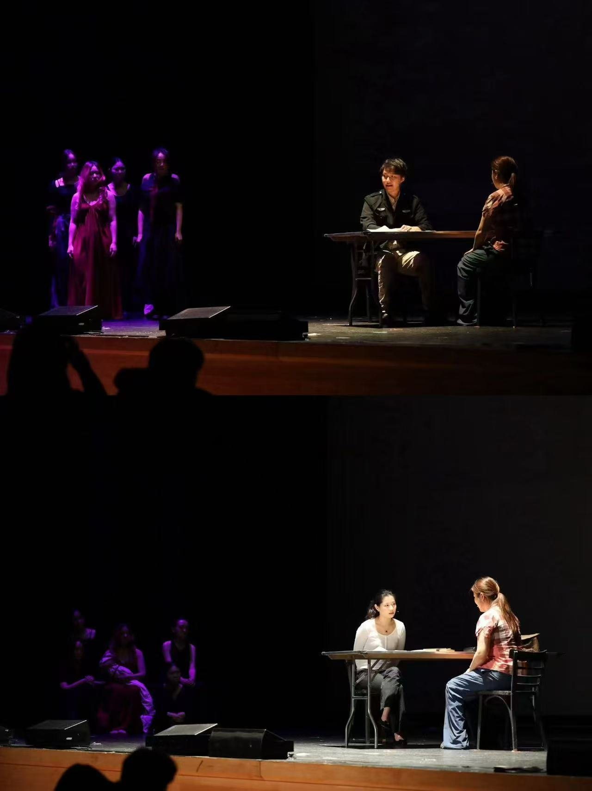
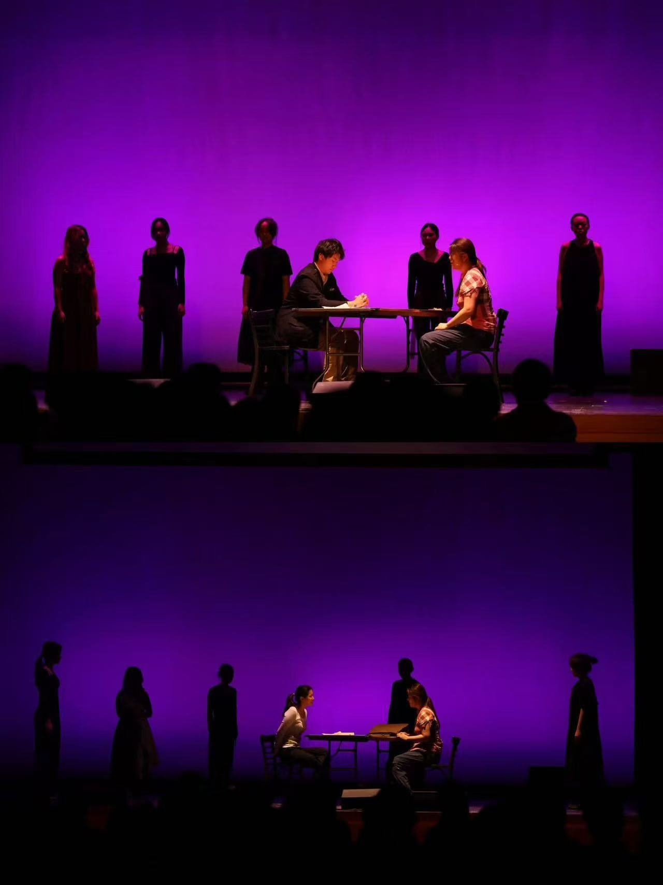

Skip to content
YUWEN YANG
Bio
Research
Directing
Her Rage
Fanletter, the Musical
Playwriting
Her Rage
Stage Managing
Her Rage in New York
Her Rage was restaged in New York in
November, 2025, directed by A Chang.


Historical Background
›